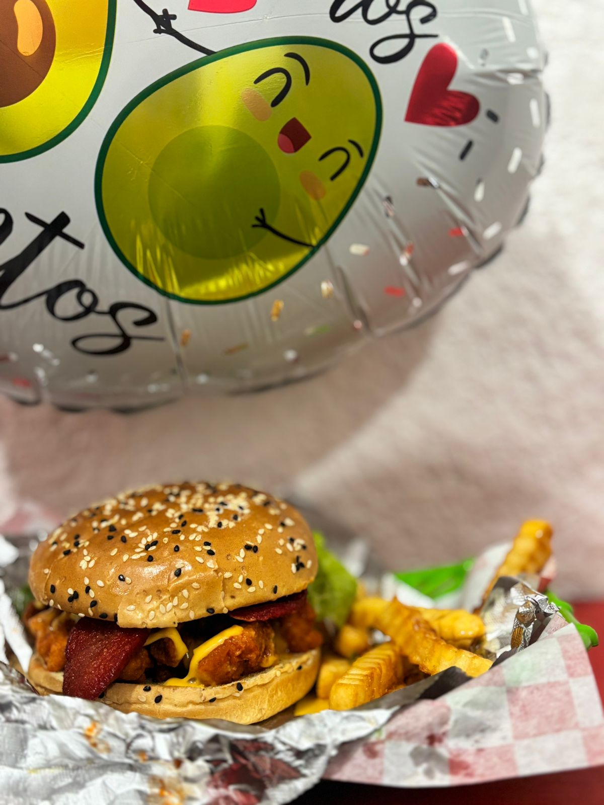

Si eres un verdadero fanático del pollo frito y de la comida rápida estilo "American Fast Food", seguramente has pedido una orden de Boneless acompañados de una salsa picosita y unas buenas papas.
Un concepto nacido en Estados Unidos
La historia de este modelo de negocio —y de nuestro platillo estrella— tiene sus raíces en las calles y diners tradicionales de Estados Unidos. Lo que allá se popularizó como la opción ideal para ver deportes (especialmente el Super Bowl), nosotros quisimos traerlo y adaptarlo con la máxima frescura a Ciudad Ixtepec.
Mientras que las alitas de pollo tradicionales (Buffalo Wings) nacieron en Nueva York allá por los años 60, los Boneless llegaron unas décadas después como una revolución. La idea estadounidense era simple pero brillante: ofrecer un trozo de pollo magro, 100% pulpa de pechuga, empanizado con el mismo nivel de crujiente que un ala, ¡pero sin el hueso!
Por qué los amamos en Mr. Papas
La idea central de nuestro negocio fue importar toda esta experiencia americana: los grandes combos, salsas espesas BBQ, freidoras industriales para un término crujiente perfecto, y por supuesto, porciones generosas diseñadas para disfrutar de verdad.
A diferencia de los "nuggets" que están hechos de pasta de pollo procesada, los verdaderos boneless americanos, como los que preparamos en Mr. Papas, son trozos enteros de pechuga cortados a mano. Esto asegura que la carne sea jugosa y que el empanizado se adhiera perfectamente para poder bañarlos en tu salsa favorita sin que pierdan su textura.

Calidad Gringa, Sazón Local
Nuestro concepto nació de ver cómo se sirve la auténtica comida en esos locales clásicos de USA, pero dándole nuestro toque especial (y unas papas insuperables). No hay nada como pedir tu cono, sentirte cómodo comiendo solo con un tenedor o con las manos, y disfrutar de un sabor que cruza fronteras.
La próxima vez que muerdas uno de nuestros boneless BBQ, recuerda que estás probando un pedacito de la auténtica cultura gastronómica urbana estadounidense... ¡aquí mismo en casa!